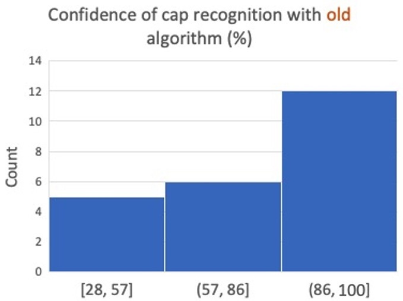
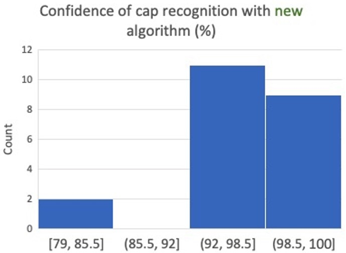

How Well Does Our System Perform?
Evaluation Tests - Robot Control
All the tests we created were based off testing and safety specification we created at the begining of the project, this way
we knew what had to be tested, when it needed to be tested and how many tests would be sufficient.
The first main robot control feature which was tested was the robotic arm touching a set target representing a fuel hole. To test this
we first found the limits of where the target could be placed so that the robot could reach it and where it was not able to. Once we found these,
we created tests to check cooordinates of the target within the limits (normal), just inside the limits (limits) and outside the limits (exceptions). The number
of tests and results are displayed below:
| Type of test | No. of tests | Passed | Failed |
|---|---|---|---|
| Normal | 50 | 50 | - |
| Exceptions | 20 | - | 20 |
| Limits | 10 | 10 | - |
As shown, all the tests performed as expected. The limits and normal tests all successfully touched the target fuel cap and the exceptions all failed causing the robot to move out of control.
The next feature to be tested was the integration of the robot control with the vision algorithms. We wanted to find the exact points where our system would fail as the fuel hatch would be out of reach. To do this we ran 55 tests checking the width (z coordinates) and depth (x coordinates) and seeing which were successfully detected by the robot and which ones were out of reach, as we were testing with one model car in Webots, the height (y axis) of the fuel cap wasn't altered. The results are displayed in the table below:
| Variable altered | No. of tests | Passed | Failed |
|---|---|---|---|
| Z | 35 | 18 | 17 |
| X | 20 | 8 | 12 |
Tests were carried out until the exact coordinates down to millimeter were determined. By finding the tests that passed and failed with set coordinates, we were able to calculate the exact points where the fuel cap was out of the robots reach. The distances marked below are the distances the car can be from the base of the robot, therefore a set of coordinates x: 0.034, y:0.32 and z:-0.12, are relative to the base of the robot, no where else. The limits calculated for where the robot could reach in terms of z coordinates were -0.1263 m through to -0.2605 m and x coordinates were 0.5340 m through to 0.5614 m. We were able to determine the exact millimeter from the robot which made the tests pass, anything outside these limits resulted in a failed test. As seen in the results, there was a leeway of roughly 14 cm on the z plane but only around 3 cm in the x plane.
Once we had calculated all the limits, we then moved onto testing the fully integrated system controlled via the app. To do this we started the server between the app and robot control code and selected randomized values for the input and started fuelling the car. This then activated the robot where the vision algorithm detected the coordinates of the cap and passed them to the robot which then would move the arm to insert into the fuel hole. We ran 15 tests using coordinates within the limits (as we were testing the connection via the app, not the vision algorithm) and they all passed successfully.
Evaluation Tests - Vision
The basic goal of computer vision is to recognise the cap so that the robot
could open it and continue with the fuelling actions. By considering the safety
aspect, we issued two advanced goals: (1) check if there is a car in front of
the robot - if not, nothing should be detected, (2) Is the hatch opened and is the
cap inside the hatch exposed? - If the hatch is closed (cap is not exposed) then
nothing should be detected. Also, there is a streched goal for further increasing the
detection accuracy - the development of an angle detection algorithm which can confirm
the 3D angle of rotation from the scene that camera captured.
For our first few demos, we made an algorithm to achieve our basic goal of cap detection,
and now, we have introduced a new algorithm which can reach all the goals that mentioned
above. The following images are showing the comparative results of detecting a same group
of model with two different algorithms:


We used the same set of models to give these results. From the images above, we can find
that the detection result with the new algorithm is much better than the one with the old algorithm.
Comparing with the old result, we have more test cases that have more than 90% confidence to
say we have found the cap, which is impressing.
We also introduced specific tests about our advanced goals and we separated our test models
into three types: (1) hatch not found, (2) hatch found & fuel cap not found and (3) hatch found
& fuel cap found. Nothing should be detected with first two types and the cap should be detected
with the third type. The following table shows the test result about our advanced goals:
| Detected | Not detected | |
|---|---|---|
| Should be detected | 20 | 0 |
| Shouldn't be detected | 2 | 19 |
From the results above, we can say that we have mostly achieved our advanced goals, The robot has a high possibility to stop detection when there is nothing to be detected.
Evaluation Tests - User Testing
In terms of user testing, we carried out a user survey to evaluate the efficiency of our app, the app is how the user interacts with the system. The questions in our survey ranged from checking if the app was easy to navigate around, checking if there were any unclear function on the app and if there were any possible improvements they suggested. Most of the results from the user survey which was given to 20+ possible end users of varied age, sex and physical ability, found the app easy to nagivate and all around very well presented but some of out main points of improvements are summarised below:
- When asked about the monochrome interface we designed to allow colour blind users to easy understand the app, most paricipants thought although some colour could have been a nice feature, due to the accessibility we are catering for most agreed monochrome was a understandable and a good idea.
- Originally, the slider for selecting the correct amount of fuel was not labeled, users stuggled to figure out how to select the required amount and suggested labeling the feature to make it clear.
- All the details (price, user account, type and amount of fuel select) were too cluttered in the display box which made it hard to see specific details such as total price which users wanted to be able see at all times.
Main Areas of Improvement
In terms of hardware, the main feature we which implemented as a result of the testing was adding the safety feature which
only accepted coordinates which were inside the limits. This feature would check if the coordinates detected by the vision algorithm
are within the limits calculated and if not, sent a warning message to the user and the robot would not proced to operate. This
ensured the robot did not behave unexpectedly which could result in an accident.
For the app, after receiving helpful suggestions from our user survey, we made a few changes to optimise the efficiency and easy of the software.
As written in the user testing section above, one of the main points was that it was hard to see how much fuel to select so we added a label
to the slider to make this clear. Another point was that the section showing the user details at all time was too cluttered with rather small
text, so we removed some of the unnecessary content from that section which allowed us to also increase the font size making
it easier to read.
One main area of improvement in terms of vision was.....